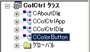
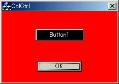

ボタンの背景色の変更が，他のコントロールのそれと多少異なるために，プログラマとしては非常に厄介であることは，前節も述べたとおりである．本節では，実際にCButtonクラスの派生クラスを作り，動的サブクラス化を実装することで，ボタンの描画色を変更していく．
| ●派生クラスを作ってみる |
C++，JAVA，C#などは，オブジェクト指向プログラミング言語と言われるが，オブジェクト指向プログラミング※1において「継承」という言葉を知らないプログラマはいないだろう．そもそもオブジェクト指向におけるの３つのキーワードは，「継承」，「カプセル化」，「ポリモーフィズム」であるだろう．これらに関しては詳しく述べないが，それぞれを１行で述べるとするならば，
JAVAや，C++（クラスに関するもの以降の内容）などオブジェクト指向プログラミングを経験している人であれば，サンプルプログラムなどで派生クラス（サブクラス）を作成したことがあるかもしれないが，実際のプログラミング（実践編）として作成したことがないかもしれない．そこでここで１から派生クラスを作る方法を解説していく．
派生クラスを記述するためのファイルを作成していこう．
- ［ファイル］--［新規作成］でヘッダファイル（*.h）を作成する．
・ ファイル名： colorbtn.h
・ プロジェクトへ追加をチェック
（チェックしなくても，クラスビューで上記ファイルをプロジェクトに追加することができるので心配しなくてもよいが，面倒なのでチェックを）- ［ファイル］--［新規作成］でソースファイル(*.cpp)を作成する．
・ ファイル名： colorbtn.cpp
・ プロジェクトへ追加をチェックもしも良くわからなかったらこの図を参照にしてほしい．（figure3.17）
以上で準備は終わる．
先ほど作成したcolorbtn.hを開いてほしい．真っ白なファイルが開くはずである．以下に記述されているコードを上から順に打ち込んでいけばよい．解説をじっくり読んでいただければ幸いである．
これはアプリケーションから，このヘッダファイルが複数回インクルードされないようにするためのコードである．もし複数回インクルードされてしまうと，クラス宣言がも複数回行われてしまうからである．一種のおまじないだと思ってもいいかもしれない．ちなみに___CCOLORBTN_H_というのは別に決まっているわけでは無いので何でもよいのであるが，ヘッダファイルと似たような名前にするほうが普通である．
これが新しく作る派生クラスCColorButtonクラス定義部である．後ろの : public CButton というのは，CColorButtonクラスは，「CButtonクラスを公開(public)派生する」ということを宣言していることを指す．
これは，動的生成機能を実現せよという意味である。したがって実行時にCColorButtonクラスのオブジェクトを作成することになる．これについて詳しく解説するとランタイムクラスなどかなり複雑なものになってしまうのでここでは割愛する．これは動的サブクラス化のための一種のおまじないだと思っていただければよい．
このクラスが持つメンバ変数を定義する．基本的にメンバ変数は，外部クラスから隠蔽されなくてはならないので（なぜかにうちてはオブジェクト指向を勉強してほしい），公開してはならないため，私的（private）宣言にしている．ここではキャプション（ボタン上の文字列）の色，ボタン背景色，ボタンが無効時の時のキャプションの色を定義する．ちなみにprivate/protected/publicをアクセス指定子という．
コンストラクタとはオブジェクトを作るためのメンバ関数である．この関数が呼ばれることで，インスタンスが背生成される．またデストラクタは，オブジェクトを消滅させるためのメンバ関数である．デストラクタの前にvirtualと書かれているが，これはデストラクタが仮想関数として定義されているという意味．派生クラスのデストラクタは仮想関数として定義されるべきといわれているからそうしているだけであるが，実際は「ポリモーフィズム」のためであるというのが正しいかもしれない．
ここでは様々なメンバ関数を定義している．これらの関数の中でAutoLoad関数以外は，関数の実体までも記述している．このような記述を「インライン関数」というが，これは実行効率をあげるための手法である．詳しくはC++を勉強してほしい．
BOOL AutoLoad(const UINT nID, CWnd* pParent);
サブクラスを実現する関数．その内容については実装時に解説する．引数として，背景色を変更したいボタンのIDとボタンを持つコントロールの親ウィンドウ（ダイアログ）をとる．
void SetTextColor(const COLORREF color){coltext = color;}
キャプションカラーを設定するための関数．関数の中身の通り，引数をメンバ変数に渡しているだけである． void SetBackGroundColor(const COLORREF color){colbackground = color;}
背景色を設定するための関数．
void SetDisabledColor(const COLORREF color){coldisabled = color;}
ボタンが無効状態のときのキャプションカラーを設定するための関数．
COLORREF GetTextColor() { return coltext; }
キャプションカラーとして設定した色を返却するための関数である．本コーナでは使用しないが，後で使用するかもしれないということで作っておいた．
COLORREF GetBackGroundColor() { return colbackground; }
背景色として設定した色を返却するための関数．
COLORREF GetDisabledColor() { return coldisabled; }
ボタンが無効状態のときのキャプションカラーとして設定した色を返却するための関数
protectedという記述は，これより以下に記述されるメンバ関数が，すべて保護される（基本的には非公開）という意味．先ほどまで定義していたメンバ関数はすべてpublic(公開)宣言であったが，それはそれらのメンバ関数が外部クラスで使われることを前提に作られているからである．ここでは３つの関数を保護(protected)宣言している．それは，描画に関する関数が，直接外部クラスに影響されてはならないためである．
virtual void DrawItem(LPDRAWITEMSTRUCT lpDIS);
ボタンのオーナー描画を行う関数．この関数は自作したわけではなく，CButtonクラスの関数をオーバーライドしたものである．
オーナー描画のボタンの表示上の外観が変化すると（即ち，描画色を変更させようとするとき）、フレームワークがこの関数を呼び出すことになっている．したがってプログラマがこの関数を外部から呼ぶことは無い。故にこの関数内部に，一連のボタン描画色変更コードを記述しておけば，後はこの関数をフレームワークが呼び出してくれるので描画色を変更することができる．
引数は，オーナー描画コントロールを塗りつぶす方法などが格納された構造体（DRAWITEMSTRUCT）へのポインタである．この情報を元に描画を行っていく．
void DrawBkGround(CDC *pDC, CRect rect,const COLORREF color);
背景を描画するための関数．これは自作の関数である．
void DrawCaption(CDC *pDC, CRect rect,const COLORREF color,const CString& str);
キャプションを記述するための関数．これも自作の関数である．
}；は，クラスの定義終了の括弧．
#endifは，#ifndefの適用をここまでにするという意味である．これら２つは対で使用しなくてはならないので，当然記述しないとエラーになるから要注意．
先ほどは，派生クラスのインターフェースを作った．インターフェースである程度関数の実体を記述したものの，実体が定義されていないものもある．実体がまだ定義されていない関数は，
コンストラクタとデストラクタ
BOOL AutoLoad(const UINT nID, CWnd* pParent)
virtual void DrawItem(LPDRAWITEMSTRUCT lpDIS);
void DrawBkGround(CDC *pDC, CRect rect,const COLORREF color);
void DrawCaption(CDC *pDC, CRect rect,const COLORREF color,const CString& str);
である．これらの中身を実装していく．colorbtn.cppを開いてほしい．当然真っ白なファイルが開くはずである．
ヘッダファイルのインクルードstdafx.hはMFCを利用するために，colorbtn.hは無いと意味がない．
これに関しては「おまじない」だと思ってよい（説明も割愛する）．
厳密に言うと，（フレームワークが）実行時にクラス名やクラス階層でのクラスの位置を知るために CObject クラスの動的派生オブジェクトに必要な C++ のコードを生成するために，記述する．第一引数は派生クラス（このクラス：CColorButton），第二引数は基本クラス（CButton）をとる．わからない人は，ヘッダファイルに，DECLARE_DYNAMIC(CColorButton)というのを書いたが，それと対で記述するものだと思ってもほぼ間違いではない．またこのステートメントにはセミコロン"；"が不要である．別に間違っているわけではない．
コンストラクタのインプリメンテーション．一般的に，コンストラクタでメンバ変数を初期化するものとされている．それは，クラスのオブジェクト（インスタンス）が作成されるときには，コンストラクタが呼ばれるからである．
ここでは，メンバ変数にディフォルトのカラーを設定している．ここでいうディフォルトカラーは，ウィンドウズのディフォルトに似た（テキスト：黒 背景：グレー 無効状態テキスト：淡いグレー）ものである．
デストラクタのインプリメンテーション．オブジェクトが破棄されるときにこれが呼ばれるが，特に何もする必要はないだろう．
AutoLoad関数のインプリメンテーション．ここで動的サブクラス化を行う．動的サブクラス化によって，ディフォルトでCButtonクラスとなってしまうボタンコントロールを，CButtonクラスのサブクラスであるCColorButtonクラスとして使用する（アタッチする）ことができる．
［引数］
const UINT nID： サブクラス化して使用するボタンコントロールのリソースID
CWnd* pParent： そのボタンコントロールの親ウィンドウ（通常はダイアログ）へのポインタ
［内部］
SubclassDlgItem（nID,pParent）： ダイアログ上のコントロールを"動的サブクラス化" し、CWnd オブジェクトに結び付ける関数．この関数が成功すると，nIDで指定されているボタンコントロールは，CButtonクラスではなく，その派生クラスCColorButtonとして使用されることになる．
SubclassDlgItemが正常終了したときのみ，AutoLoad関数がtrueを返すような設計にしている．
DrawItem関数のインプリメンテーション．これはCButtonクラスのDrawItem関数のオーバーライド関数である．またこの関数は，ボタンの外観が変更されようとするときに，フレームワークが呼び出すので，プログラマが外部クラスで明示的に呼び出すことは無い．「書いておけば勝手に実行してくれる」感覚で捕らえてもらえばよいだろう．
［引数］
LPDRAWITEMSTRUCT lpDIS：DRAWITEMSTRUCT構造体へのポインタ．
DRAWITEMSTRUCT構造体には，オーナー描画の際に必要なデータが格納されている（このデータはフレームワークが持ってくるので，プログラマは使うだけである）．DRAWITEMSTRUCT構造体は，次の形式を持つ．
引数lpDISのメンバhDCをCDCクラスのFromHandleメンバ関数で，CDCクラスのオブジェクトのポインタに変換し，その値をpDCに保持しておく．またボタンのキャプションを保持しておく．
１行目で，引数lpDISのメンバitemStateをnStateに保持する．
２行目以降では，CRectクラス（矩形クラス）変数（focusRect,btnRect）を２つ定義し，引数lpDISのメンバrcItemを変数にコピーしておく．rcItemは，ボタンの領域である．
focusRectは，ボタンがフォーカスを得たときに，ボタンの内側に表示される点線の領域である．先ほどfocusRectに，ボタンの領域を格納したので，focusRectを4ポイントずつ上下左右狭くしていると考えればよい．結局focusRectにはフォーカス領域，btnRectにはボタン領域が格納されることになる．
ボタンのキャプションを取得する．GetWindowTextはCWndクラスのメンバであるが，CButtonがCWndの派生クラスであるために，ボタンのキャプションを得ることにも使用できるのである．キャプションは，先ほど定義したstrCaptionに格納しておく．
DrawBkGroundとDrawCaptionは後で説明する自作の関数で，背景色と文字列の描画を行う．
pDC->DrawEdgeは，ボタンの境界部分を描画するCDCクラスの関数．第２引数にEDGE_RAISEDを指定することで，ボタンが押されていない状態として描画する．
これは，ボタンがフォーカスを得ず，かつ無効状態ではない標準の状態の描画である．
ここではフォーカスを得たり，選択されているとき，そして無効状態にあるときのボタンの外観を描画している部分である．先ほど引数からボタンの状態をnStateに得たが，それとビット操作をしてボタンが選択されているのかどうかなどを調べている．
ODS_FOCUS：ボタンがフォーカスを得ているとき（ボタンを押しているときは当然フォーカスを得ていることに注意）
ODS_SELECTED：ボタンが選択（押されている）されている時
ODS_DISABLED：ボタンが無効状態の時
上記のコードを良く眺めてもらえればわかるが，ボタンの状態別に何が実行されるかを以下に解説する．
フォーカスのみを得ている時 pDC->DrawFocusRect(focusRect)
フォーカスを描画するCDCクラスメンバボタンが押されている時 pDC->DrawEdge(btnRect,EDGE_SUNKEN,BF_RECT);
ボタンの境界部分を描画するCDCクラスの関数．第２引数にEDGE_SUNKENを指定することで，ボタンが押されている場合として描画される．
pDC->DrawFocusRect(focusRect)
フォーカスを描画するCDCクラスメンバボタンが無効状態の時 DrawCaption(pDC, btnRect, GetDisabledColor(), strCaption);
無効状態のキャプションを描画．引数にGetDisableColor（）を使用して無効状態のキャプション色を使用していることに注目．
上の表だけで実現できるのは，ifステートメントの前に，フォーカスの無いボタンの背景色やキャプションの描画がなされているためであることは言うまでも無い．動作が良くわからない場合は，デバッグをするなりして各自検討してみてほしい．
DrawBkGround関数のインプリメンテーション．ボタンの背景を描画する．実体は非常に簡単で，引数で渡されるカラーのブラシを作り，デバイスコンテキストを介してボタン領域をブラシで塗りつぶしているだけである．
［引数］
CDC *pDC：ボタンのデバイスコンテキスト
CRect rect ：ボタン領域
COLORREF color：ボタンの背景色
DrawCaption関数のインプリメンテーション．ボタンのキャプションを描画する．まずデバイスコンテキストにキャプションカラーを持たせる．このとき戻り値にそれまで持っていたテキストカラーが返るので保持しておく．その後，CDCクラスのメンバDrawText関数で，ボタン領域内に，キャプションを描画する．pDC->DrawTextの第３引数の意味は，上下左右真ん中でかつ１行のキャプションを描画するという意味．最後に保持しておいたテキストをまた持ち直している．
引数であるキャプションカラーを変えることで，通常のボタンと無効状態のボタンが同じ関数でキャプション描画できる．
［引数］
CDC *pDC：ボタンのデバイスコンテキスト
CRect rect：ボタン領域
const COLORREF color：キャプションカラー
const CString& str：キャプションここまで記述したら，実行してほしい．ビルドに成功しても何も起きないが，良く見るとClass ViewにCColorButtonクラスが追加されていることに気づくはずである．うまく実行できない方や全ソースコードが見たい方はこちら を参照してほしい．

figure3.18 クラスビューを見るとさてカラーボタンを作るためのクラスライブラリは作成した．あとはこのライブラリを使用して実際にボタンをカラフルにしてみよう！
クラスライブラリCColorButtonを使って，ボタンの描画色を変えていく．といってもクラスライブラリを使うだけなので，実際記述するものは非常に少ない．またクラスライブラリにしたということは，バグの管理が比較的簡単である．ということも指す．
まずは，CColorButtonクラスをソース内で利用できるようにヘッダファイルを追加する．ファイルビューを開き，ColCtrlDlg.hとColCtrlDlg.cppに
#include "colorbtn.h"
として追加する．ここで重要なのは，インクルードする順番である．上記の２つのファイルには，#include "stdafx.h"
とstdafx.hがインクルードされているが，このファイルよりも下の位置でインクルードしなくてはならない．なぜならば，colorbtn.hではCButtonクラスやCWndクラスなどのMFCクラスを使用しているが，MFCクラスがロードされるのはstdafx.hをインクルードした後だからである．正しくインクルードされれば，実行時につまづくことはないだろう．次に，これまで記述されていたボタンの描画関連のコードを全て削除する．具体的には以下のようにしてほしい．まずCColCtrlDlgの定義部(colctrldlg.h)において，ボタンのブラシを削除し，その代わりに先ほど作成したカラーボタンクラスの変数m_colBtnを追加しておく．
OnCtlColor関数では，ボタンに関するコーディングを全て削除する．ダイアログに関するコードのみ残して置けばよい．
OnInitDialog関数の最後を以下のように書き換えてほしい．
ここまで記述して実行してみよう．エラーは出ないはずであるが，ボタンの背景色は変更されていないはずである．うまく実行できていない方は，ヘッダファイルが正しく追加されているか，よく確認してほしい．
次にボタンの描画色を決めるコーディングをOnInitDialog関数内部で行う．以下描画色を設定するボタンのリソースIDをIDC_BUTTON1として話をすすめていく．
追加したのはボタンに関するコードの3行である．
m_colBtn.AutoLoad(IDC_BUTTON1,this);
この関数を実行すると，サブクラス化が実行され，IDC_BUTTON1をCColorButtonクラスとして使用することができるようになる．第2引数は，ボタンの親ウィンドウになる，ダイアログ自身を引数として渡している．
m_colBtn.SetBackGroundColor(RGB( 0, 0, 0));
ボタンの背景色を設定する．ここでは黒にした．
m_colBtn.SetTextColor(RGB(255,255,255));
ボタンのキャプションカラーを設定する．ここでは白にした．
これらの関数の実体は，作成したCColorButtonの中身を見ればわかるはずなので，ここでは詳しく説明しない．ちなみに無効状態のキャプション色を設定していないが，設定しなくてもコンストラクタで設定したディフォルトカラーが設定されているから心配する必要は無い．ここで実行してみよう．以下のようになれば大成功である．

figure3.19 ボタン背景色が変更できた！オーナー描画せよ！というメンバ関数DRAWITEM関数を呼び出さなくても，ボタンの描画色が変更されているだろう．これはボタンの外観を変える必要が出てきたとき，フレームワークが勝手に呼んでくれるためである．ぜひ，いろいろな色を試して見てほしい．また作成したCColorButtonクラスには，エラー処理がなされていないので，各自つけてみることをお勧めする．
※1 これからのプログラミングスタイルはこのオブジェクト指向プログラミングになっていくだろうと作者は考える．ソフトウェアの再利用（階層性）性や情報隠蔽や多態性などを考えると，従来の関数型プログラミングでは，複雑なソフトウェアに対して対処できなくなってくるからである．Microsoftの「.NET」構想は，オブジェクト指向言語であるJAVAに対抗するために提供されていくだろう．
←Back［ボタンコントロール(1)］ -- Up［コントロールの背景色を変更する］ -- Forward［***］→
VisualC++でソフトを作ろう (c) 藤門千明
{kind=link}